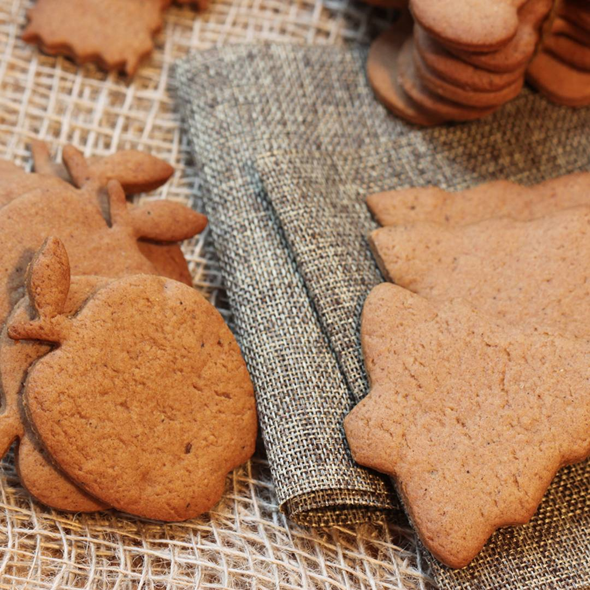

Pierniki
Jeśli szukasz prostego przepisu na idealne, świąteczne, korzenne pierniczki, które już w dniu pieczenia chrupie się tak samo dobrze, jak każdego kolejnego dnia... zabierajmy się do pieczenia
-

-
❰ Składniki ❱
- 450 g mąki pszennej np. tortowej
- 1 średnie lub duże jajko
- 200 g miodu naturalnego
- 50 g cukru np. drobnego lub pudru
- 120 g prawdziwego masła
- płaska łyżeczka sody oczyszczonej
- 2 łyżki cynamonu
- łyżka kakao
- płaska łyżeczka kardamonu
- po pół łyżeczki imbiru pieprzu czarnego, kolendry i goździków
❰ Sposób przygotowania ❱
- Masło, miód, cukier oraz wszystkie przyprawy podgrzewaj kilka minut w małym garnuszku. Całość mieszaj, ale nie doprowadzaj do wrzenia. Cukier nie musi się całkowicie roztopić.
- Mąkę z sodą przesiej bezpośrednio do miski i dodaj jajko. Następnie dodaj tylko lekko ciepłą masę z przyprawami z rondelka. Wszystko wyrób mikserem na wolnych obrotach lub ręcznie do połączenia składników na jednolitą masę.
- Ciasto przykryj folią i odstaw do lodówki na 1-3 godziny.
- Po tym czasie wyjmij ciasto i włącz piekarnik na 170 stopni (opcja pieczenia: góra/dół). W czasie nagrzewania pieca, przygotuj sobie blachę z wyposażenia piekarnika. Wyłóż ją papierem do pieczenia.
- Urwij kawałek ciasta. Podsyp lekko mąką i rozwałkuj na cieniutki placek o grubości około 2 mm. Wykrawaj dowolne wzory, przy pomocy foremek. Resztkę ciasta dodaj do kolejnej porcji z miski i powtarzaj czynność jak wyżej. W ten sposób unikniesz zbyt dużej ilości mąki dokładanej do wykrawków z ciasta.
- Pierniczki piecz do 10 minut (lub odrobinę dłużej) w zależności od ich grubości. Pierniczki jeszcze rosną w trakcie pieczenia. Po upieczeniu i przestudzeniu pierniczki będą chrupiące. Z czasem jednak zmiękną.
Smacznego!